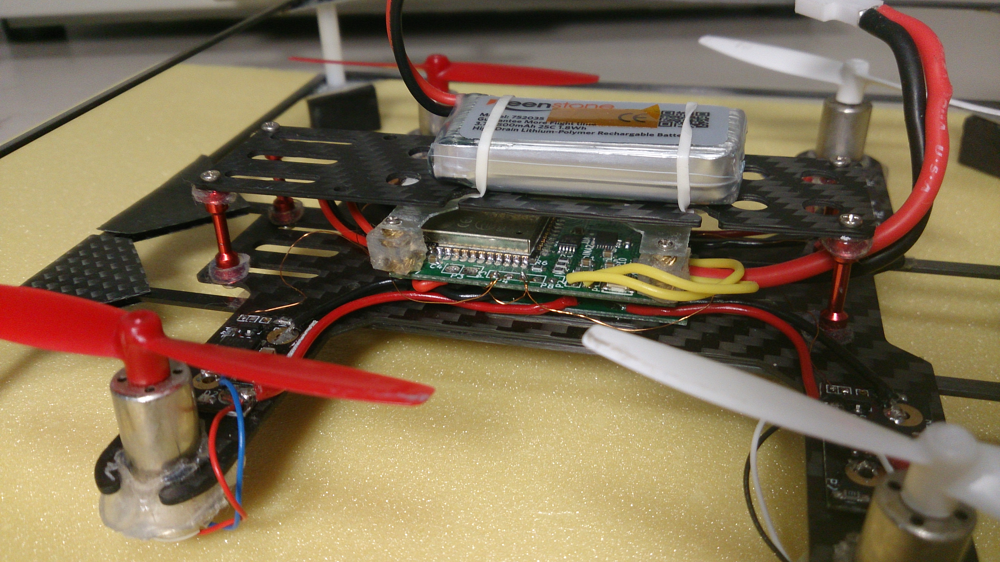
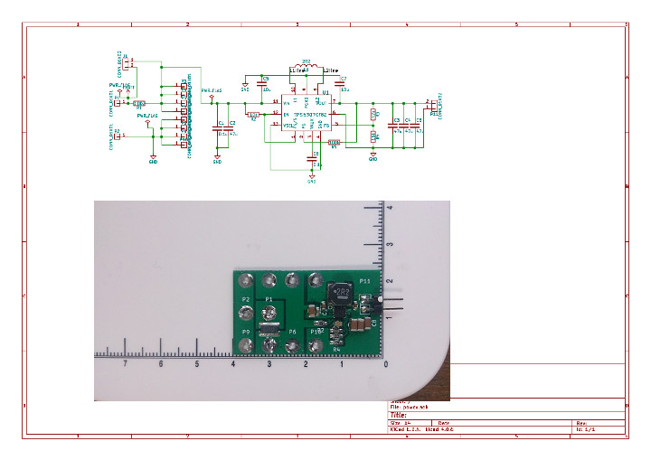

hachidori はPC上で走らせたArduPilotで制御する実験的なリモートセンサ/アクチュエータで, ArduPilotプロジェクトへの寄与を目的に始まったDCoJAによる小さなプロジェクトです.
私はDCoJAのメンバーであるドローンワークス社のコントラクターとしてArduPilotを同社が開発していたFCにポーティングする作業を行っていたのですがhachidoriはその中で派生したプロジェクトでした. 私とドローンワークス社とのコントラクトはすでに終了していますがオープンなプロジェクトとしてhachidoriの開発を続けています. プロジェクトの成果はDCoJAを通じてソフトウェアやプロトタイプの回路図などがオープンソースとして公開されています.

hachidoriからみるとArduPilotはセンサーデータを受け取りアクチュエータへの指示としてPWMの値を返すUDPサーバーです. このようなリモートセンサ/アクチュエータは実に古典的なアイデアですが,このスキームには大小様々な問題があります.
とりあえずトイドローンタイプのhachidoriの飛行はこんな感じです:

これはstabilizeモードです. APM(ArduPilot)はうまく姿勢を制御できているように見えます. arducopterはlaptop PCのUbuntu 4.4.0-lowlatencyカーネル上で動かしています.
250mmフレームにのせた別のhachidoriとAPMが動いているホストPCです:


実験的なhachidori用ドライバを含んだArduPilotのソースツリー等はDCoJAのgithubリポジトリ中のardupilotのhachidoriブランチにあります.
hachidoriのファームウェアはesp-idf上のapplicationになっています. テストやコンフィグレーションのためのPC上の小さなUDPサーバーがjunkyardの中にあります. b3testはセンサーデータの表示やモーターのテストのためのサーバー, b3confは設定や定数などをhachidoriに書きこむためのサーバーです.
レイテンシ latency
このようなスキームでの大きな問題の一つがレイテンシです. ご存知のように私達が普通に目にするほとんど全ての無線プロトコルはレイテンシに重点を置いていません. Wi-Fiを除けばそれらはいつも低消費電力が歌い文句ですしWi-Fiはスループット優先です. これらのプロトコルには再送という操作が存在することが多くこれがレイテンシの大きな原因となっています. 物理的データを再送するとリアルタイム性を失いあまり意味がない場合があります. ドローンのIMUから得られるデータが0.2秒遅れて送られて来た場合それは制御にどの程度役立つでしょうか? このケースでは再送などせずにさっさと次のデータを送って欲しいのですがそのようなプロトコルは一般的ではなく、またWi-FiやBTのようにある程度オープンなものはありません.
現在の実装では, IMUのデータを含むUDPパケットは1ms間隔でhachidoriから送られPWM値は最大5ms間隔でPCから送り返されます. レイテンシを下げることを目的にAPMの走るホストPCをhostapdで同時にWi-Fiのアクセスポイントとしています. このような構成で平均的なping値は2-3msですが,これは無線の環境によって簡単に5-50msを超える値になってしまいます.
IMUのデータ送信とPWMのデータ受信が最もクリティカルなのでその部分をWi-Fi以外のパスを使って通信することも考えられます. 例えばnRF系の一部チップがサポートするShockburstのような通信方式が候補になるかもしれません. そこにはまた別の問題があるのですが.
コネクションを失った場合のフェイルセーフ
レイテンシを緩和することができたとしても別の大きな問題として無線のコネクションが失われるか, ほとんどのパケットが失われるような状況でどうするかということがあります. この問題にはいくつか対処が考えられるのですが, 現在のところhachidoriはボード側でもセンサーのデータを使いMadgwickフィルターの計算によってごく簡単な姿勢の推測を行い, コネクションが失われたときにはそれを使って姿勢の制御をしながら着陸を試みています.
プロトタイプのハードウェア
テストのためにいくつかのプロトタイプのボードやフレームを作りました. 素人が作ったものなのでトイドローンの域にすら達していません.

プロトタイプボードの構成は基本的には同じで主なパーツは
- ESP-WROOM-32
- MPU-9250
- MS5611 または 2SMPB02(OMRONの精密気圧センサー)
- INA226
です. コアレスモーターの機体用のボード

はソフトウェアのテストを目的に私がKiCADで作った簡単なものでそのファームウェアも他とは少し違っています. 対応するファームウェアのソースはDCoJAから私のgithubにforkしたところに作ったbee3-prototypeというesp32-app/hachidoriのブランチです. また対応するardupilotのドライバも少しだけ違いその他にも不安定な実装をいろいろ試しているので同様に私のgithubにforkしたardupilotのhachidoriブランチに置いています. 回路図は

でdigi-key等で購入できるパーツで作られています. コアレスモーターの機体ではこのボードと小さな電源および分電用ボード

に加えSTのVL53L0Xモジュールを接続して実験していました。 ファームウェアのmasterブランチは別のプロトタイプボードに対応していてそちらはハードウェアの方もプロの手によるものだったのですがこれは実際に飛ぶ機体の形には至りませんでした.
PWMはESP32で生成していますがブラシレスモーターのESC用にはMCPWM(Motor Control PWM)モジュールを,コアレスモーターでは周波数が高いためLEDコントロールモジュールを使っています.
hachidoriは小さなドローンやローバーをインドアで動作させ、開発や教育の目的で使われることを目標にしていました. APMがPC上にあるのでPCでソースを修正してwafやmakeでビルドすれば直ちに新しいAPMをテストできます. その使い方だとある意味でSITLのようなシミュレーターと似たものと考えることもできますが, hachidoriは実体のある機体や車輌でそれとは違った楽しみを与えてくれるのではないかと思うのです. 私はこの作業を始めるまでUAVについてほぼ素人でしたがhachidoriのおかげで実に様々なこと: 痛んだモーターやプロペラ, 機体の振動がIMUに与える影響, 地面効果, 機体の重心やバランス, 磁気の擾乱などなどを実際の物理的な機体で経験し学ぶはめになりました. 凄く楽しいと思いませんか? :-)
たくさんの問題の一方でいろいろ面白い可能性もありそうに思えます. APMをパワーのあるサーバー側で動かすことで今のところ小さなUAVのFCでは難しい重い計算や処理も試せるかもしれません. もしこのちょっとクラシックでクレージーな思いつきに興味を持っていただけるとうれしいです.
このプロジェクトに関わったドローンワークス社を始めDCoJAのメンバーの皆さん, 特に開発のきっかけとなった議論とhachidoriという名前に加え問題にぶつかる度毎に新しい方向への示唆を与えて下さった大同大学の橋口宏衛先生に, そしてこのわくわくした体験を可能にしてくれたArduPilotとそのコミュニティに感謝します.
Happy Hacking,
kaz